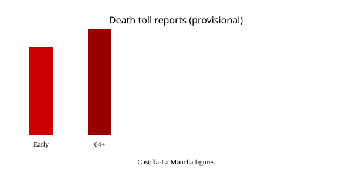

Toledo · accidente ferroviario · 28 de octubre de 2026
Al menos 64 muertos tras la colisión por alcance de un AVE de Renfe y un Iryo cerca de Urda.

Lo que coinciden las redacciones
El Gobierno de Castilla-La Mancha y Adif coinciden en que poco antes de las 09:00 del miércoles 28 de octubre un tren AVE de Renfe (servicio 2080, Madrid-Sevilla, unos 397 pasajeros) colisionó por alcance con un tren Iryo (servicio 6076 o 7076, unos 147 pasajeros incluyendo un bebé) que estaba detenido en la vía en el kilómetro 118 de la línea de alta velocidad Madrid-Andalucía, entre Los Yébenes, Mora, Orgaz y Urda (Toledo). Varios vagones del Iryo y al menos uno del AVE descarrilaron y cayeron por un terraplén. El total de personas a bordo era de 544. La cifra de muertos se elevó a al menos 64 según el Gobierno autonómico; las heridas se contaban en decenas, algunas graves. Los servicios Madrid-Andalucía quedaron suspendidos.
Reuters, AP, BBC y El País coinciden en la ubicación aproximada (unos 130 km al sur de Madrid), en la naturaleza del choque por alcance, en los operadores (Renfe estatal e Iryo privada) y en que se trata del segundo accidente grave en la misma línea en 2026, después del de Adamuz (Córdoba) en enero que dejó alrededor de 45-46 muertos. El rey Felipe VI, el presidente Sánchez y la mayoría de partidos cancelaron actos de precampaña para las elecciones del 29 de noviembre. Vox mantuvo los suyos.
Lo que es solo una cita o hipótesis
Las fuentes del Ministerio de Transportes y de Adif indicaron inicialmente que el AVE había recibido autorización para continuar y que el Iryo estaba parado por un problema de tráfico o de señalización. Algunos medios citaron un posible fallo del sistema LZB de frenado automático seguido de un error humano (paso de señal en peligro / SPAD). El ministro Óscar Puente señaló a Adif por haber autorizado la reanudación en “circunstancias inexplicables”. Estas son afirmaciones de responsables o filtraciones; no constituyen el informe de la Comisión de Investigación de Accidentes Ferroviarios (CIAF) ni de la Guardia Civil. El número exacto de muertos puede seguir variando mientras se accede a todos los vagones.
Mecanismo e historia que el lector necesita
La línea Madrid-Sevilla fue la primera de alta velocidad española (inaugurada en 1992). Opera a velocidades de hasta 300 km/h con sistemas de protección como el LZB o el ERTMS más modernos en tramos actualizados. Un tren detenido en vía principal requiere que el control de tráfico detenga o reduzca la velocidad de los que le siguen. Si la señalización no se transmite correctamente o el conductor no la respeta (o el sistema automático falla), la distancia de frenado a alta velocidad es de varios kilómetros. El choque por alcance a alta velocidad produce fuerzas extremas y descarrilamientos, especialmente si hay terraplenes.
El accidente de Adamuz en enero de 2026 (también Renfe e Iryo en la misma línea) generó debate sobre mantenimiento e inversión. Puente había dicho en su momento que la probabilidad de otro accidente similar era “bajísima”. Esa declaración es un dato histórico; no predice el resultado técnico de esta investigación. La precampaña electoral del 29-N convierte cualquier fallo de infraestructura en munición política, pero los tiempos de llegada de emergencias, el número de pasajeros y la ubicación del punto kilométrico son hechos verificables independientemente del color del Gobierno.
Los trenes AVE Class 103 (Velaro E de Siemens) y los de Iryo (también de alta velocidad) tienen sistemas de seguridad redundantes. La investigación deberá examinar registros de caja negra, comunicaciones con el centro de control, estado de las señales y posibles fallos de software o de procedimiento. Hasta que eso se publique, “fallo del LZB más error humano” es una hipótesis de trabajo, no una conclusión.
Lo que esta historia no es
No es un atentado. No es un choque frontal entre trenes en sentidos opuestos. No es todavía una sentencia sobre la responsabilidad de Adif, Renfe, Iryo o del Gobierno. La fotografía superior es un tren de tipo en servicio normal en 2013; no es la imagen del accidente de hoy.


Artículos fuente y puntuaciones
Imágenes: Wikimedia Commons fotografías de tipo (AVE Class 103; mapa de red). Los pies indican que no son el accidente. onerror cae a SVG locales. No se copiaron píxeles de agencias de noticias. Sin atributo crossorigin.